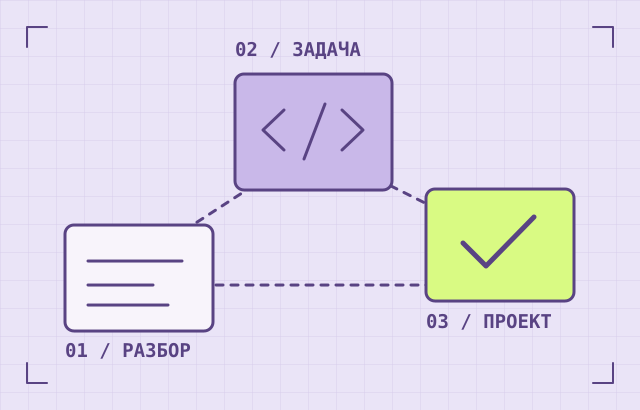

Методика / Формат
Как мы учимся
В каждом модуле есть короткий разбор темы и задача, которую вы решаете сами. В финале эти задачи складываются в один проект.

На примере курса Python
От урока к отчёту
Путь одного модуля: от знакомства с файлами до автоматизации рутинной задачи.
- 01
Разберите пример
Откройте CSV на Python и посмотрите, как одна строка таблицы превращается в данные, с которыми может работать программа.
- 02
Решите задачу
Возьмите таблицу расходов, проверьте пустые строки и посчитайте итог для каждой категории.
- 03
Соберите проект
Объедините шаги в скрипт, который принимает новую таблицу и готовит короткий отчёт без ручных вычислений.